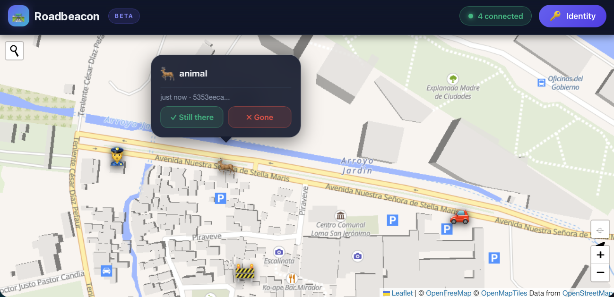
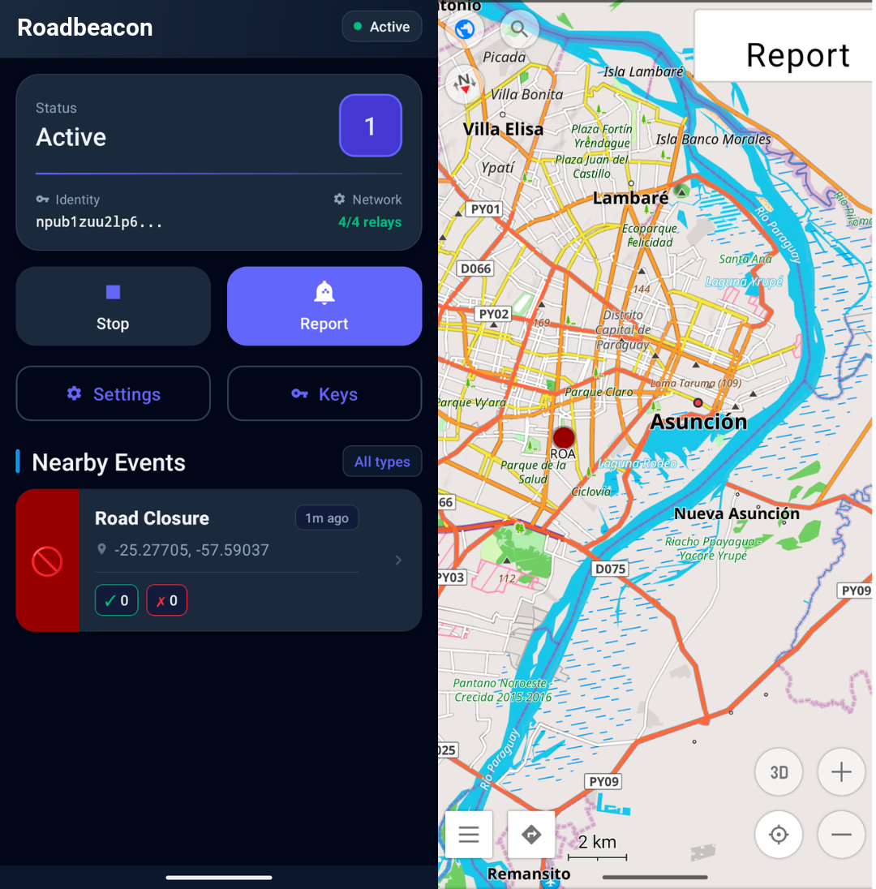

Jak to funguje
- Řidič vybere kategorii (policie, nehoda, uzavírka, stavební práce, nebezpečí a další). Aplikace sestaví událost Nostr s polohou, geohashem a časem vypršení a podepíše ji klíčem řidiče. Klíč může být trvalá identita, nebo dočasný klíč.
- Aplikace podepsanou událost zveřejní na relé Nostr. Může putovat i jako kompaktní binární zpráva přes sítě MeshCore LoRa (experimentálně, přes build MeshCore Open s lokálním API: jak to funguje a jak to otestovat).
- Ostatní řidiči se ptají relé podle geohashe a vidí hlášení jako značky na mapě. Mohou potvrdit, že problém „stále trvá“, nebo že „už tam není“. Platnost hlášení závisí na typu: u kolon například 1 hodina, u rychlostních radarů 30 dní.


Kde to získat
- Webová aplikace: cypherpunk.today/static/roadbeacon
- Aplikace pro Android (plugin do OsmAnd): Zapstore, nebo APK z vydání na GitHubu. Přes Obtainium: přidat Roadbeacon. K zobrazení událostí musí být nainstalovaný OsmAnd.
- Zdrojový kód: github.com/jooray/roadbeacon. Veřejná doména (Unlicense).
Sledujte nás na Nostru
- Otevřít v aplikaci Nostr
- njump.me
- Primal
- YakiHonne
- NIP-05:
roadbeacon@cypherpunk.today - Adresa pro zapy:
roadbeacon@pay.cypherpunk.today
npub1cysu9vjwykzl6pjm2pxautnctxxga7zq4rq6c7njvhkdjfk747hq3q839h
O názvu
Do verze 0.4 se Roadbeacon jmenoval Roadstr. Přejmenoval se, aby si ho nikdo nepletl s navigační aplikací Roadstr, nezávislým projektem jiného autora. Aplikace spolu nesouvisejí a nejsou vzájemně zaměnitelné. Mají však společný formát dopravních událostí (Nostr kinds 1315 a 1316), takže každá umí zobrazit hlášení té druhé.